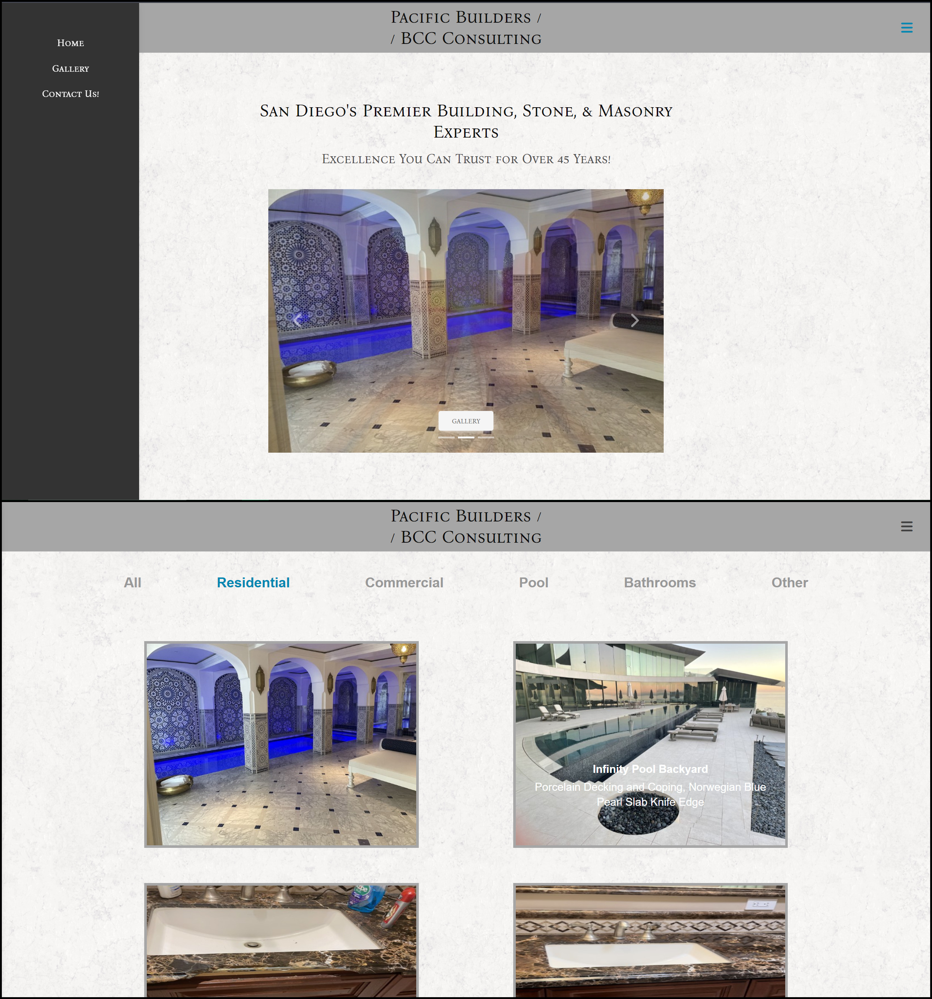
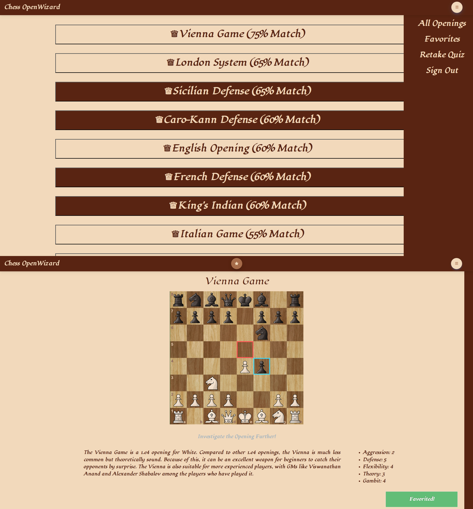
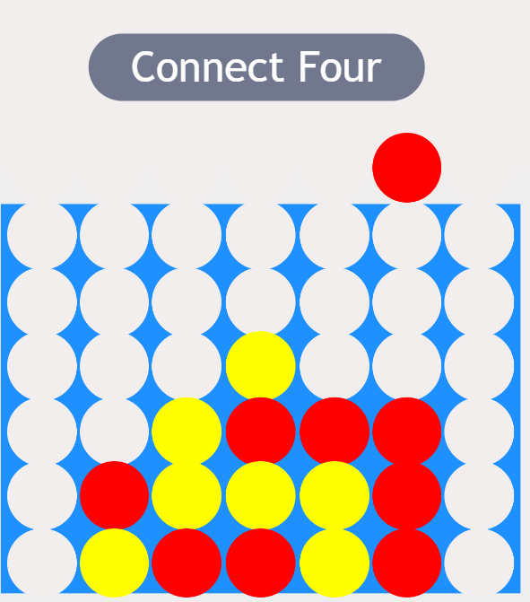
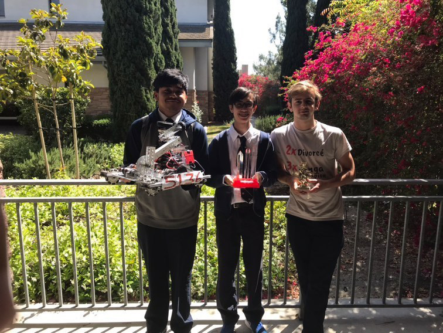
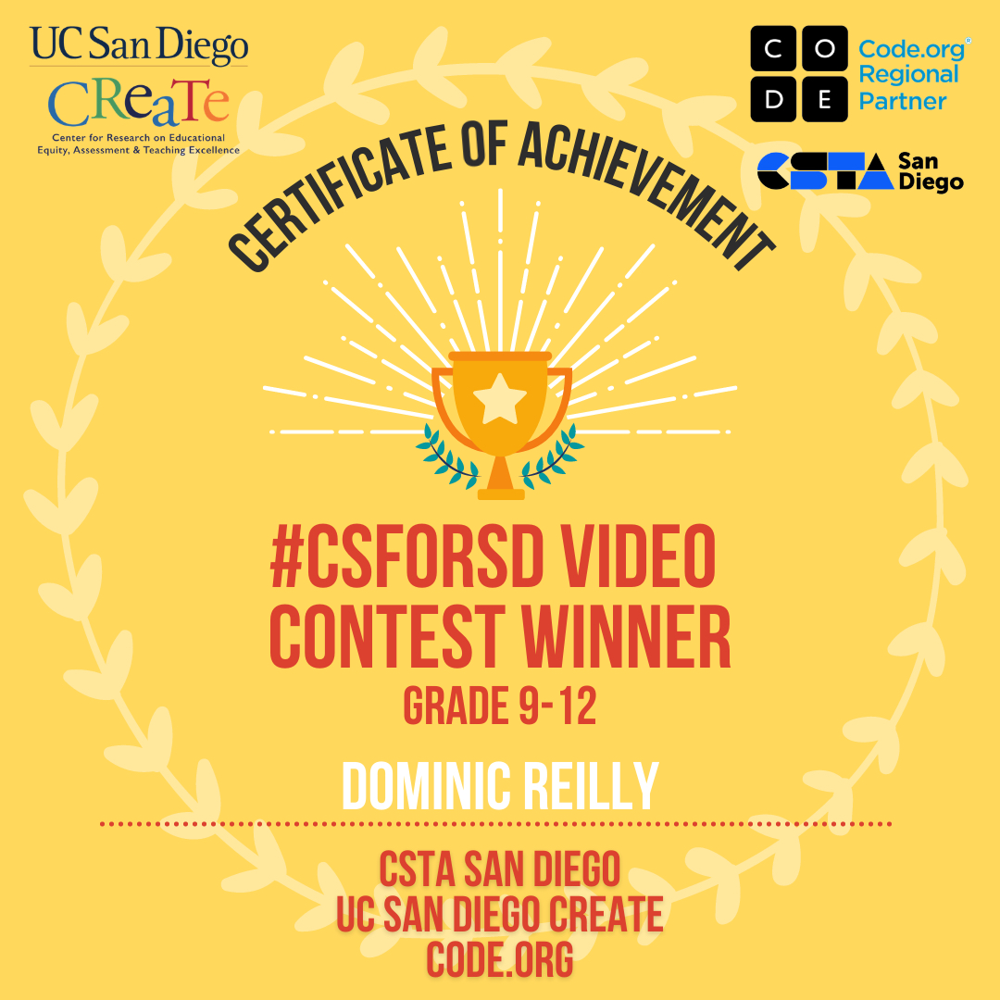

Hey There!
I'm Dominic Reilly, a Computer Science Major based in San Diego.
About Me
I’m a Junior Computer Science student with a minor in Artificial Intelligence, aiming for a graduate
degree in the field. Raised in San Diego, my logical mindset and passion for Computer Science drive my
success and enthusiasm in problem-solving and innovation.
Outside of academics, I stay active through Jiu Jitsu, snowboarding, and rock climbing. These hobbies
keep me balanced and focused, reflecting my determination and drive in all aspects of my life.
Portfolio

I designed and developed a professional website for Pacific Builders Stone and Tile, featuring a
gallery that showcases their exquisite masonry work.

I developed a web app from scratch that lets users take a quiz to find chess openings that suit
them and learn more about those openings.

In high school, I created a fully functioning and animated Connect 4 game where players can
compete against another player or an AI set to easy, medium, or hard difficulty levels.

Lead Programmer for FIRST Robotics Team
I was the sole programmer for my high schools FIRST Robotics team, creating all the code from
scratch after it was lost during COVID.

CSforSD Award Winner
I won 1st place in the CSforSD Video Contest, a competition where high school students showcased
their computer science projects. My winning entry was a game I created called Gravity Runner.

Disposal of Nuclear Waste Research Proposal
In high school, I conducted research on nuclear waste disposal at the San Onofre Power Plant. I
wrote a research paper, created a poster, and presented my findings on the topic.